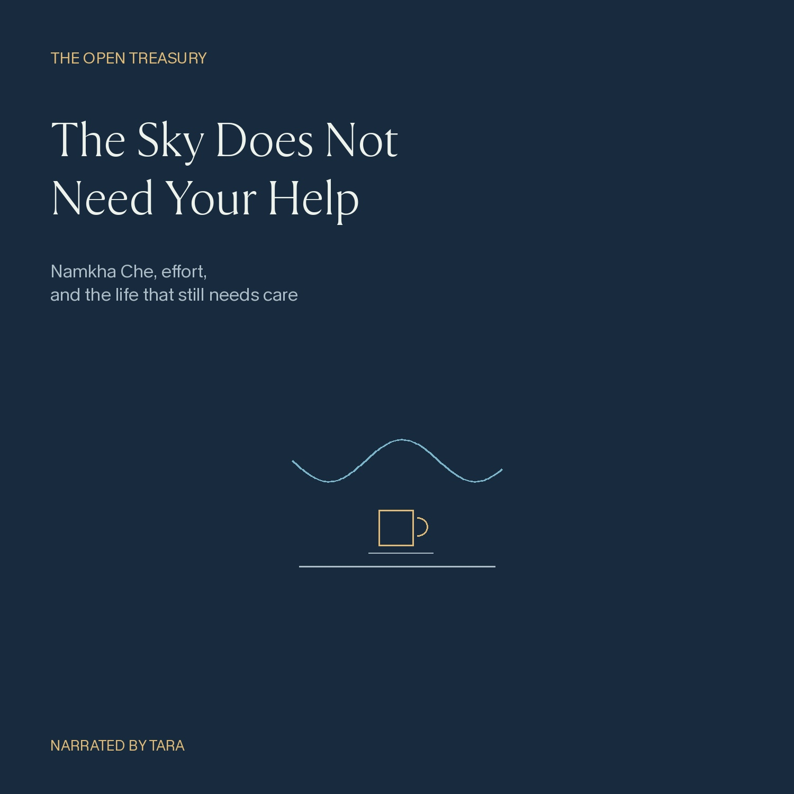

The Sky Does Not Need Your Help
Namkha Che, the effort to become free, and the life that still needs care
A companion on the Namkha Che dialogue tantra through Adriano Clemente's analysis: effort, thought, karma, bliss, compassion, uncertainty and a week of ordinary reflection. Original commentary, not the article or its verse translation read aloud.
Moving visual edition
Watch or download the 720p symbolic animation
Chapters
- 00:00 - The person trying to repair the sky
- 02:23 - One title, more than one text
- 04:48 - A mandala is not a trophy cabinet
- 07:21 - What the teaching refuses to manufacture
- 10:53 - Effort, and the effort to be effortless
- 13:30 - Words cannot do everything, but they can still help
- 15:57 - Karma is not an insult to the sky
- 18:22 - Thought is not automatically the enemy
- 20:48 - The pleasure that starts writing the rules
- 23:10 - Nonduality is not the name of your team
- 25:34 - Compassion without the career in compassion
- 28:00 - Method is useful, and method can become a hiding place
- 30:28 - The missing line is part of the lesson
- 32:56 - Complete does not mean finished with everyone
- 35:15 - Seven days of reading without pretending to be a teacher
- 37:42 - The sky, and the hand you still extend
Read alongside the course
Source companion PDF
Detailed sources and reading limits
Complete spoken script
Rights, narration and review
Original commentary and AI-generated narration by Tara. Scholarship, modern translations, source terms and underlying works retain their rights. No blanket CC0 licence applies to this combined edition. No source PDF, source illustration, source recording, music or support solicitation is included.
Every complete selected take was compared with the frozen script using speech recognition, with independent checks on disputed passages. Five complete retakes replaced the first takes of clips 7, 11, 18, 23 and 30. All 31 joins, selected-source reconstruction, untouched-master PCM identity and full audio/video decoding were checked. This is automated and editorial review, not full human-ear listening or native-language pronunciation certification. Approximate Tibetan names, weak consonants and minor function-word/inflection variations remain possible. The complete intended spoken script is supplied.
Measured narration 40:25.08, 6,575 words, 16 chapters. The unaltered selected performance is privately preserved losslessly. The listening edition uses only +2.5 dB fixed gain and an oversampled transparent true-peak limiter, with 5 ms latency compensation. No EQ, pitch change, time stretching or other compression was used. MP3: -17.9 LUFS, -1.8 dBTP. M4A: -17.5 LUFS, -1.3 dBTP. The moving symbolic edition has the identical decoded soundtrack to the M4A; its picture ends 1.045 seconds later because chapter frames are rounded up. All 16 encoded designs and motion pairs were visually inspected.
This is a companion on the dialogue tantra, not newly uncovered material, an independent Tibetan translation, direct introduction or a claim of attainment. Earlier Treasury episodes 97 and 99 already discussed the short text and some correspondences. No ritual, subtle-body or consort procedure is taught. The seven-day sequence is ordinary reflection, not a substitute for a qualified teacher, existing practice commitments, medical care or ordinary responsibilities. See the source companion for exact page references, reading limits and the final source-specific publication judgment.
Got a question? Ask Tara - the best listener questions become short answer episodes.
Searchable transcript
Auto-generated pilot, 21 November 2026. This is a selection of ten courses, not a top-ten listening chart. Open-source Whisper recognition, with term-spelling checks and targeted rechecks. Timestamps are approximate. [?] marks a reading to check against the audio before quoting. This is not a certified verbatim transcript or a new translation.
Text · WebVTT · Corrections and uncertainties · Prepared script · Source credits and rights
The source and translator rights stated for this episode apply here too. No new blanket CC0 grant is made.
You sit down to meditate. For a few seconds, things are fairly simple. There is a body, a sound outside, the feeling of the seat. Then the supervisor arrives. Am I doing this correctly? Was that awareness? Why did it go away? Perhaps I should relax more. Not that much. Perhaps this is dullness.
Perhaps checking for dullness is the problem. Before long, the person who came to stop being pushed around by thought is conducting a performance review of every thought. The Namkha Che is interested in this trap, but it is also interested in the trap on the other side. You hear that nothing needs to be manufactured, announce that you have understood, and carry your old habits into the world under a much grander name.
One person is trying to polish the sky. The other is throwing rubbish into the street because the sky cannot be stained. Neither has quite understood what the sky metaphor is doing. This course asks how to take a radical teaching seriously without turning it into another project of self -improvement, and without turning it into an excuse. Our main guide is an article by the Tibetan translator, Adriano Clemente, published in the Revue d'Etudes Tibetaines in 2021.
He studies a 33 chapter tantra in which Vajrasattva and Samantabhadra converse. It belongs to the Namkha Che family of texts, often called the total space of Vajrasattva. A short form consists of 55 quadrains. The longer dialogue rearranges those verses and places questions around them. Those questions matter. They shall wear an apparently effortless teaching immediately becomes difficult. [?]
This is a new study of that conversation, not another march through all 55 verses. It is original commentary not Clemente's translation read aloud, and not a claim to replace a qualified teacher. We will discuss what the text says about recognition, but this recording does not confer direct introduction or certify anyone's realization. Its practical work is more modest and, I think, more useful, learning to notice the mistakes we make while interpreting a teaching, and asking whether our understanding makes us more honest, less brittle, and more available to other people.
You do not need to decide in advance that the text is right. Bring a question instead. When I say that I want to be free, what exactly am I trying to make happen? Before entering the teaching, we need to open the correct door. Namkha Che does not name one perfectly uniform object preserved unchanged on every shelf. Clemente lists several related tantras.
The short essential text has 55 quadrains arranged into 27 topics. In the particular longer tantra he studies, there are 33 chapters. The corresponding verses begin in chapter 6 and continue through chapter 32. They do not appear in the familiar short text order. That difference is not academic housekeeping. Imagine someone giving you a set of answers without the questions.
You might mistake an answer about the nature of awakening for an answer about whether you should apologize to your friend. The longer dialogue supplies a setting in which to ask what kind of question a particular answer addresses. Clemente identifies his tantra in the Tsamdrak edition of the Nyingma collection of tantras. Its frame presents Samantabhadra, the primordial Awakened figure, in conversation with Vajrasattva and other awakened beings.
That is the work's sacred literary world. We are not treating it as a recorded historical interview. Likewise, the tradition associates the essential text with Garab Dorje and its early Tibetan transmission with Vairotsana. Clemente reports the account of Garab Dorje reciting it as a child. A traditional account can be important to a community without becoming a modern biographical fact established by independent evidence.
There's uncertainty even about the relationship between the short and long works. At the end of the article Clemente does not claim to have proved that this longer tantra is the original source from which the short text was extracted. He leaves the relationship open. Some lines present in the short text are missing in this witness of the longer one. Our earlier Treasury courses studied the 55 -verse sequence. [?]
Here, we will follow the problems made visible by the dialogue. If awakening is not fabricated, why study? If thought is not outside wisdom, why do we get lost? If the nature being described is beyond karma, why do consequences continue? If everything is complete, why does compassion matter? These are not defects to conceal. They are the working parts of the course. Good reading does not require pretending the manuscript has no seams.
Sometimes the seam prevents us from making the text say something it never securely said. The first five chapters of Clemente's tantra prepare a world much stranger than a modern lesson in relaxation. There are awakened families, mandalas, channels, sense consciousnesses, and letters. We should neither erase these into wellness language nor rush to perform everything mentioned.
Clemente distinguishes the naturally complete mandala from a bodily mandala containing deities in the bodies channels. Chapters four and five discuss channels and their relation to letters. Those are features of this tantric work. We are describing their place in its argument, not giving a channel practice or inventing a ritual from a journal summary. What matters for our inquiry is the opening tension. Vajrasattva asks about generating a mandala, which the answer presents as already complete. [?]
The question already carries the structure that the teaching will challenge. There is something missing and a sufficient act of production will supply it. Think of a musician who has become so worried about being musical that every note is monitored as evidence of talent. Practicing scales may help the musician, but no quantity of self inspection can turn the judgment, am I musical enough, into the music itself. [?]
The very act meant to secure the experience can become an obstacle to participating in it. That is an analogy for a particular problem of grasping. It is not proof of the Tantra's account of awakening. A useful analogy illuminates one relation. It does not smuggle in an entire metaphysics. The Mondola language also resists the idea that awakening means leaving the living world behind. [?]
The Tantra's opening is populated. Bodies, senses, and manifestation belong to its field. This is not the fantasy of a sterile witness sealed off from everything untidy. An ordinary reflection follows. When you imagine spiritual success, what is allowed to remain in the picture? Other people, a noisy room, a body that gets tired, a thought that does not announce its own purity.
If the imagined result depends on removing every inconvenient feature of being alive, perhaps the plan has quietly become an evacuation. That does not make every condition equally helpful. A quiet room can be useful. Rest matters. Guidance matters. The question is whether a helpful condition has been promoted into a demand that reality must meet before you will stop fighting it. The opening chapters give us a large, strange picture.
We should resist shrinking it into either an anatomical recipe or a trophy cabinet of special experiences. In the sixth chapter, the dialogue asks about the nature of beings. In the seventh, it asks how the meaning of total perfection is understood. These are questions about what the teaching considers fundamental, not claims that every ordinary habit is already an enlightened action.
This distinction is easy to say and surprisingly easy to lose. Suppose a window has fingerprints on it. Cleaning the fingerprints can improve what you see, but cleaning does not manufacture the possibility of transparency from nothing. Now suppose someone decides that because transparency is not manufactured by cleaning, fingerprints cannot obstruct anything. That person has made the opposite mistake.
The analogy is imperfect. The text is not proposing a little transparent substance hidden inside your skull, but it helps separate two claims. A nature need not be produced and confusion can still interfere with recognizing what is being discussed. Clemente often uses the expression pure and perfect mind for the Tibetan term also rendered as bodhicitta.
Listen to how the dialogue qualifies it beyond arising, ceasing and conceptual capture. Whatever interpretation one develops, it is a mistake simply to identify that with the familiar personality that prefers one meal, resents one person and remembers one childhood. Calling that personality an eternal witness would add a claim the description has not established.
Nor does a language of pervasive openness by itself prove that there is one enormous cosmic person thinking everybody's thoughts. We need not settle every debate about mind and reality to avoid that leap. The text challenge is already demanding enough. Can you understand a discussion of awareness without immediately converting it into a possession, a location, or a superior version of yourself? [?]
Clemente's account returns to images of sky, rainbow, and reflection. An appearance can be vivid without being available as a solid thing to possess. The problem is not necessarily that experience fails to appear. It is that we demand a kind of ownership or certainty that the appearance cannot supply. This is why the language of discovery can become misleading.
We imagine a final item at the end of the search, a sensation, a permanent location, a private certificate. The text challenges the structure of that search. It does not give us a more exotic item to put in the same place. Here is a useful question for study. Not a secret meditation technique. When you remember a good period of practice, what do you want back?
The actual freedom from compulsive checking, or the pleasure of being someone who had a good period of practice? Those can separate very quickly. You may begin by wanting relief from self -preoccupation and by building an archive of evidence about your spiritual self. That archive can contain impressive experiences. It is still an archive. None of this proves that deliberate training is worthless. [?]
The article itself contains questions about method and wisdom. It does not simply cancel the conversation after declaring everything complete. We will keep returning to that point. A teaching can deny that awakening is a manufactured product without denying that learning, clarification, and responsible conduct have functions. The target is not intelligence or care. It is the attempt to make the ungraspable safe by converting it into a possession.
The tenth chapter asks what freedom from action and searching means. Then the conversation becomes almost comically persistent. If this nature does not depend on effort, where do awakened capacities come from? How would future practitioners approach it? If one rests rather than constructs, what accounts for the result? Notice what the text does not do.
It does not shame the questioner for asking. The radical claim generates practical objections, and the dialogue lets those objections speak. We should do the same. A common mistake is to hear an instruction about non -fabrication as a command to perform inactivity. You begin supervising the absence of effort. A thought arises and you make a tiny internal correction. Another thought arises and you correct the correction.
Soon, the command to relax has become the most demanding manager in the building. Dylan Esler, discussing an early Atiyoga exposition in another issue of the same journal, helps clarify this problem. In the passage we are using, freedom from action is not an artificial refusal to act. Pursuing an idea of non -action can itself become another form of effort. This is a contextual comparison, not proof that every author or teacher uses the terms identically.
A mundane example may help. Someone tells you to stop interrupting. You can become so busy rehearsing your silence that you stop hearing the person speaking. The valuable shift is not the production of a flawless silent self. It is actually listening. Similarly, the question is not always how much effort is present. It is what the effort is doing.
Making time to study may be helpful, insisting that an experience validate your identity may not be. Taking responsibility for an unkind remark is not the same activity as trying to force the mind into an imagined, immaculate shape. You can examine this after an ordinary activity. Where did attention become an attempt to control how the moment reflected on you?
Where did care become self -surveillance? Do not turn that question into a new examination you have to pass. If you discover that you spent the whole afternoon trying to be effortless, the discovery is information, not a spiritual criminal record. The practical distinction is between conditions that support understanding, and the fantasy that sufficient manipulation will manufacture the fundamental nature described by the text.
Confusing those makes us alternate between strain and collapse. Reading carefully may offer a third possibility. Deliberate care without the promise of manufacturing a perfect self. The twelfth chapter concerns what language cannot capture. The twenty -first returns to the question of whether the pure and perfect mind can be expressed in a teaching at all. A spoken course on such a text therefore begins with a fairly obvious embarrassment.
If words cannot deliver the thing, what are we doing here? We are using words for work that words can do. A map cannot become the walk. It can still prevent you from taking the wrong road. An explanation cannot turn into someone else's direct understanding. It can expose a confusion, distinguish two claims, or help you ask a better question of a teacher. That is not a consolation prize.
Many avoidable problems begin with a bad description of what we are trying to do. For example, if awareness is imagined as a very refined object, practice becomes a search for an elusive object. If freedom from thought is imagined as the extermination of thought, ordinary thinking becomes an enemy. If non -duality is imagined as a theory that abolishes other people, the theory may make someone less compassionate while feeling extraordinarily advanced.
Words can help dismantle those pictures without becoming the final replacement picture. The dialogue also makes teaching itself part of the problem, an explanation as a shape. It selects, distinguishes, and names. The text being discussed challenges the attempt to turn its subject into a thing contained by that shape. This is why a good explanation may sometimes need to withdraw a misleading implication it has just created.
That is not permission for a teacher to contradict themselves carelessly and call it profundity. We should distinguish a deliberate limit of description from evasion. If an explanation repeatedly excuses harm, dodges ordinary factual questions, or insists that confusion proves the students inferiority, the word ineffable does not settle the matter. A useful reading habit is to give each sentence a job.
Is this a historical claim? A translation choice? A metaphor? A statement made within the Tantra's sacred dialogue? An interpretive suggestion from this course? Different jobs need different kinds of evidence. When you cannot tell which job a sentence has, stop and ask. That pause is a service to the teaching, not a betrayal of it. The aim is not to become suspicious of every word.
It is to stop asking words to do something they cannot do, while making them answerable for the things they can. Now we reach the passage that can make the whole teaching sound either liberating or dangerous. In chapter 13, the question concerns whether pure and perfect mind is subject to karma. Clemente's translation includes a conditional argument. If the wisdom being described were under karma's power in the relevant way, it would not be self -originated wisdom.
A conditional argument about the status of wisdom is not the same sentence as nothing you do has consequences. That distinction deserves to be slow. If you send a cruel message, somebody may be hurt. If you refuse to learn from what happened, a pattern may continue. The claim that awakening is not manufactured by conditioned action does not by itself establish that conditioned actions have ceased to affect anyone.
The problem is a change of subject. You begin with the claim about the ultimate nature described by a contemplative text. You end with a claim about the causal effects of your behavior. The second claim does not follow merely because the first sounds profound. There is also a more tender misuse. Someone is suffering and you tell them that suffering is only an expression of awake in nature. Even if you believe that the text points to something important, you have not therefore answered their need for food, safety, company, or treatment. [?]
An interpretation that makes you unavailable to a person in front of you should at least make you re -examine the interpretation. The text's language is radical. We should not domesticate it into a slogan about positive thinking, but we should not inflate it into a universal causal theory either. The dialogue is asking whether the nature it describes is created and controlled by the processes from which beings seek release.
A practice -useful question can remain ordinary. What changes when I stop treating an unwanted thought as a permanent verdict on who I am? Well, still taking responsibility for what I do next. That is not the whole meaning of the Tantra. It is a responsible place to test one consequence of our reading. A thought need not become an identity. An identity need not become a defense. [?]
A defense need not become another injury. Please do not use this chapter to announce that you are beyond karma. Its better use is to notice how quickly a claim about freedom can become a strategy for avoiding accountability. Chapter 14 is especially relevant to anyone who has spent a meditation session fighting the fact that the mind thinks. The short text verses discussed there connect wisdom with thought in a way that refuses a simple war between them.
They also criticize an approach that turns mental isolation into another construction. It would be easy to hear this as permission to abandon all discernment. That is not a safe inference. Consider the difference between a thought arising and you're believing its whole story. A flash of resentment appears. Then comes the documentary. Why you are right. Why the other person always does this? Why this time retaliation would be unusually educational. [?]
The first event and the production of the documentary are not identical. Treating them as identical leaves only two bad options. Suppress the first event or endorse everything that follows it. The text opens a different question. Must the arising of thought be a departure from the nature it describes? That is not the same as asking whether every interpretation carried by thought is accurate. A thought about a snake can arise without there being a snake in the room.
A thought about freedom can arise without conferring freedom. The fact that thought is not excluded from the discussion of wisdom does not make the content of every thought wise. This matters in ordinary life. You can notice an impulse without obeying it and without treating its appearance as a moral catastrophe. You can put the phone down before sending the message. You can ask what actually happened.
You can make room for information you do not enjoy. Those are ordinary acts of judgment. Not a certification of Dzogchen recognition. They prevent us from using the vocabulary of the highest view to become less capable of learning. The chapter also challenges a spiritual ambition that can masquerade as renunciation. You may be waiting for a future in which your mind no longer inconveniences you.
Then the present becomes a waiting room. Every thought is evidence that you have not arrived. What if that arrangement is part of the trouble? Not because confusion is wonderful, but because the demand for a thoughtless future can stop you from investigating how confusion works now. The question is not, can I produce the correct number of thoughts? It is, what am I adding when I turn a passing event into a fixed enemy, a fixed self, or an unquestionable command?
A good experience can be more difficult to read than a bad one. When practice feels awful, you may at least suspect that something needs examining. When it feels luminous, spacious, or blissful, the temptation is to promote the experience into the definition of truth. Now, anything that preserves it is good, and anything that disturbs it is an obstacle. The 18th chapter warns against relying on particular forms of bliss.
The 23rd examines the limits of methods and the attachment that can form around their results. The 32nd contains a textual difficulty that is useful precisely because it resists a tidy summary. Clemente reports a heading concerned with attachment to the pleasure of thought. A commentary he compares has non -thought instead. He notes that the wording is repeated twice in this chapter and does not simply declare it a copying error.
We should not repair the uncertainty by choosing whichever version makes our favorite teaching sound easiest. Both possibilities raise a serious question, but they are not the same question. Attachment to thought can include fascination with an explanation. Attachment to non -thought can include fascination with quiet. We can examine both dangers while admitting that the witness problem remains unresolved. The point is not that pleasure is forbidden.
The point is that pleasure can quietly take over the job of judging what is real. A musician can enjoy a beautiful note without insisting that every note must sound exactly like it. Likewise, an experience may be welcome without becoming a contract that the next moment has to honor. This is a useful place for a simple written reflection. After a satisfying period of practice, record two things separately.
What you actually noticed and what you concluded it proved. The first might be a reduced sense of strain. The second might be that you have permanently solved something. Separating those statements does not cheapen the experience. It protects it from a claim it may not support. And if you have not had unusual experiences, this chapter does not place you at the back of an invisible queue.
The course is not awarding prizes for fireworks. It is asking what happens when experience becomes evidence for a self that now has something exceptional to defend. A pleasant state can pass. The demand that it must not pass is a different event. Learning to distinguish them is already useful. Chapter 15 offers a small grammatical difficulty with large consequences.
A heading in the tantra can literally be read as freedom from a defect of non -duality. The corresponding topic can also be written in a way that means non -dual and free from defects. Clemente explains the difference and says he has not found commentary support for one possible interpretation of the more awkward reading. That is the sort of footnote a triumphalist course might skip. [?]
We should spend a moment with it. A text that matters to you can contain a difficult particle. A respected translator can explain a possibility without endorsing it as settled. Scholarship does not become useless because it refuses to manufacture certainty on demand. There is an interpretive lesson here beyond grammar. Non -duality can become a possession like anything else.
You adopt the right word, learn to recognize the wrong words, and divide the room into people who understand that there are no divisions and people who do not. The irony does not automatically refute non -dual philosophy. It does show that agreeing with a proposition is not the same as being free from the habits the proposition is meant to illuminate. The verses discussed in this part of the article, trouble attachment, non -attachment, and an imagined middle position.
We will not turn that into a declaration that all Buddhist schools secretly teach exactly the same thing. Nor will we use a difficult line as proof that the tantra has refuted an entire philosophical tradition. A polemical text has a viewpoint. Our task is to explain it carefully, including where our evidence runs out. For ordinary reflection, notice what happens when someone uses a spiritual vocabulary you dislike.
Do you ask what they mean? Or does the vocabulary decide their whole case before they have spoken? You do not have to agree with everyone. Some claims are inconsistent, poorly supported, or harmful. The useful distinction is between judging a claim and protecting an identity by refusing to hear it. The same applies to this course. If a phrase sounds impressive but cannot survive a clear question, the impressive sound does not done the work.
A little less certainty can sometimes be a form of fidelity. It leaves the text room to be difficult, and leaves you room to learn something you did not already intend to find. One of the most demanding parts of the text is its proximity between freedom from fabrication and language of love and compassion. In Chapter 11, the corresponding opening verses place these themes together.
Later, Chapters 26 through 29 return to offerings, generosity, and the possibility that meritorious action can become binding. The criticism is not exhausted by the claim that giving objects is bad. It asks about the grasp being carried into the act. You help somebody, then you begin to own the fact that you helped them. Their gratitude should arrive in the right form. [?]
Their life should justify your sacrifice. Their next decision should not embarrass the story in which you are the generous person. The material gift has gone out. The invoice has stayed attached. That is an ordinary analogy for a problem in grasping. It does not pretend to explain every ritual reference in the Tantra, but it shows why a teaching concerned with non -attachment might examine acts conventionally regarded as admirable.
We should resist the opposite maneuver too. Someone can hear that generosity binds and conclude that the most advanced option is to do nothing. That is a convenient doctrine when other people need help. Patrul Rinpoche's later account of view, meditation, and action is a useful comparison here. In the public commentary we consulted, the account does not isolate emptiness from compassion or dispense with Bodhisattva conduct.
We use that to place our reading in conversation with a later Nyingma presentation, not to claim that a 19th century explanation settles the original meaning of every early verse. A useful question is not, did I feel completely pure when I helped? Motives are often mixed. If perfect motives become a prerequisite, help may never arrive. Try a more workable question. Can the help meet the other person's actual need, without making them responsible for preserving my self -image.
Sometimes that means giving. Sometimes it means asking first. Sometimes it means a limit, because a promise you cannot sustain is not made kinder by grand language. Sometimes it means accepting that your help was clumsy and repairing it. The test is not whether you can say the act was empty. The test is whether the way you use that idea makes you less possessive and more responsive. Compassion does not need a permanent job title.
Another person does not need to become a supporting character in your spiritual career. The 20th chapter is full of material that should prevent a simplified account of this work. It discusses ritual forms, powerful methods, and their results, while questioning their capacity to establish the authentic condition at issue. We are not going to extract a procedure from that discussion. No ritual, subtle body, or consort instruction follows here.
A source can be read closely without turning every described practice into a do -it -yourself exercise. The broad problem is familiar outside Tantra. A method can work for its purpose and still fail to do something else we demand of it. A breathing exercise may settle you enough to have a difficult conversation. It does not prove that everything you believe during the conversation is true.
A period of concentration may develop steadiness. It does not by itself answer every question about the nature of awareness. A philosophical argument can expose a contradiction. It does not automatically change how you treat the person who contradicted you. Those are distinctions among functions. Not a ranking in which ordinary help is worthless because it is not ultimate.
The text's radical hierarchy should be stated honestly. It questions whether constructed methods can produce the nature described as unconstructed. We do not have to soften that claim. But neither should we extend it into the claim that people never benefit from training, support, ethical restraint, or practical remedies. This is especially important when a reader is distressed. Do not use a theory of primordial completeness to abandon sleep, food, medical care, or a reliable person you can talk to.
Seeking ordinary help is not a philosophical failure. A concept about the ultimate does not settle a concrete health decision. The methodological question is narrower and sharper. What am I expecting this method to do, and why do I think it can do that? If the answer is relief, say relief. If it is learning a skill, say that. If it is reassurance that you have become somebody important, you may have located a different project hidden inside the first one.
The text is not gentle with spiritual production. That severity can be useful when directed at our inflated claims. It becomes cruel when directed at a person's actual needs. A method can be a tool. It can also become a place to hide from the thing the method was supposed to help us examine. We need enough honesty to tell the difference. Clemente's article is not only an exposition of a doctrine.
It is an encounter with a particular textual witness, and that witness does not always behave neatly. He identifies a missing line in the material corresponding to the 33rd quad train, another in the 38th, and another at the beginning of the 55th. He notes other changes in wording and order. In one place, a reading seems to require a correction. In another, he refuses to assume that the awkwardness must be a copying mistake.
These differences matter because an argument can hang on a negative, a subject, or the relationship between two lines. Imagine reading a set of instructions with one line missing. You would not fill the gap by asking which completion best matches your personality. Yet, that is often what we do with spiritual texts. A preferred interpretation feels right, so the feeling becomes evidence that the manuscript must have intended it.
Respect requires something firmer. We can say what a witness contains, what another witness supplies, what a translator proposes, and what remains uncertain. None of those statements needs to impersonate the others. The 32nd chapter's medicine image gives a good example of caution. Clemente's English has a doctor seeking medicine. Esler, in discussing an early exposition also brings out the problem of a doctor seeking a doctor.
The Tibetan wording and its interpretation have a history. We should not declare a single clever English version to be the final solution. What remains useful across that uncertainty is the question of misplaced searching. A person can possess the condition needed for something while looking for it as though it were elsewhere. But even that explanatory theme must not be turned into the claim that all help is unnecessary.
For study, make a small distinction in your notes between what you understand, what you infer, and what you are borrowing from someone's authority. Most of us put those in the same drawer. Separating them can be unexpectedly liberating. You do not have to defend an inference as though losing it would destroy the whole teaching. You can revise a reading without losing the reasoning you cared about the text. [?]
The missing line is not an invitation to cynicism. It is an invitation to stop making devotion depend on false precision. A text can open something important while still requiring carried readers, imperfect manuscripts, and the patience to say this part is not settled. The later chapters return to completeness, time, offerings, and the possibility of practice in the future. [?]
The final chapter asks explicitly about future yogans. A work that questions striving, nevertheless, ends by addressing how its teaching is to be lived. That should make us cautious about the easiest modern slogan. You are already perfect, so there is nothing to do. Perfect can mean several things in ordinary English. It can mean morally faultless. It can mean psychologically healed. [?]
It can mean successful according to a standard. It can mean complete, in the specific sense discussed by a contemplative tradition. Move between those meanings without noticing, and the slogan becomes a machine for producing confusion. If the text attributes primordial completeness to the nature of beings, it does not follow that every person has finished learning. Every injury has healed, or every promise has been kept.
A person may understand a principle well enough to explain it, fail to apply it under pressure. They may need to apologize, learn a skill, or ask for help. None of those facts is settled by saying that the ultimate dimension is not a manufactured product. The same caution applies to the text's language about the three times. We should not convert a contemplative claim about timelessness into a scientific proof that memories, planning, or causal order are meaningless. [?]
A statement can challenge how experience is grasped without answering every question of physicist or historian might ask. In practical terms, the future still contains an appointment you may need to keep. The past still contains a person you may need to call. The fact that planning is not the same as reality does not make care in planning unnecessary. A useful measure of understanding is therefore not the number of obligations you can dissolve with a phrase.
It is whether the teaching changes your relationship to an obligation without making the other person carry the cost of your interpretation. Can you keep the appointment without rehearsing your identity all the way there? Can you admit the mistake without treating the admission as the death of a solid self? Can you let a good act be useful without preserving it forever as evidence of goodness? These are not proofs of realization. They are ordinary questions that keep a high view in contact with a shared world.
Completeness should not become a way of being finished with everyone else. Let us turn the course into something you can use after the recording stops. What follows is a week of ordinary reflection, not a substitute for lineage practice or instructions from your teacher. There is no special breath, visualization, posture, or altered state to produce. Keep any existing practice commitments distinct from this reading exercise.
On the first day, notice one moment when experience becomes a performance review. Perhaps you are listening, working, or studying. What changes when the main question becomes how well this moment reflects on you? Write one sentence about the shift without grading yourself for noticing it late. On the second day, separate an event from the story attached to it. An irritation occurred. Then came an interpretation of what it proved about you or somebody else.
You do not have to force the irritation away. Ask whether the interpretation deserves a certainty it received. On the third day, examine an effort that helps and an effort that mainly tightens the knot. Making time to read may help. Repeatedly checking whether the reading has transformed you may not. Avoid turning this into a universal rule against effort. Be specific. On the fourth day, remember something pleasant without making a demand that it return.
What was the experience and what did you conclude it proved? Keep those answers separate. On the fifth day, offer or accept a small piece of ordinary help. Ask what the recipient actually needs. Notice whether gratitude, control or embarrassment begins to alter the exchange. Do not withhold useful help because your motives are imperfect. On the sixth day, return to a passage you do not understand.
Label the uncertainty rather than covering it. Is the problem a word, a witness variant, an argument or a conflict with something you believe? A precise question is a worthwhile result. You have not failed because you do not possess a final answer. On the seventh day, review the week without making a spiritual biography. Did anything become a little less compulsory? Did you catch an excuse before using it?
Did you become more capable of listening? If nothing obvious changed, do not invent an achievement. You have a clearer account of what you tried. Bring the questions that genuinely remain to a qualified teacher if you have one. Explain what you noticed rather than claiming what you attained. The course should help you become a better reader of experience and of the text. It should not hand you a new identity called the person who was finished with identities.
We began with someone trying to repair the sky. The Namkha Che conversation and challenges that person's whole arrangement, the things sought as a future acquisition, may not be the kind of thing that acquisition can supply. The activity meant to secure freedom can reproduce the grasping from which freedom is wanted. Even non -duality, bliss and non -action can become possessions. [?]
But the conversation also gives us reasons not to turn that challenge into complacency. It begins within a richly populated tantric world, asks repeated questions about understanding and practice, speaks of compassion, examines the bondage hidden inside generosity, and ends by considering future practitioners. Its radical language does not absolve a reader from reading carefully.
Clemente's contribution is valuable partly because he allows the difficulty to remain visible. He gives the chapters their questions, records the corresponding verses, notes variance and emissions, and does not pretend that the relationship between short and long texts has been finally solved. We have followed that example in a limited way. This course has not translated a complete tantra, reproduced his article, read the Iron commentary, or established the historical authorship of the text. [?]
It has studied the dialogue through his published analysis with a few carefully identified comparisons. The source companion tells you what was read and where the limits are. If one idea stays with you, let it be a distinction rather than a slogan. Not being manufactured is not the same as not needing to be understood. Not being a fixed self is not the same as not having to care.
Thought not being an enemy is not the same as thought always telling the truth. And if one ordinary gesture stays with you, perhaps it is this. Before defending your interpretation, ask what it is doing in the situation. Is it opening attention or closing a case? Is it helping you meet somebody? Or explaining why you do not have to?
That question cannot certify the highest view. It can interrupt a very common counterfeit. You do not need to make the sky approve of you. You do not need to capture a cloud and call it permanent clarity. You can also stop using the sky as an alibi for neglecting the ground. There is still a cup to wash, a message you might choose not to send, a question worth taking seriously. [?]
Another person whose pain has not become unimportant because you have found a large vocabulary. The sky does not need your help. The life taking place beneath it still deserves your care.